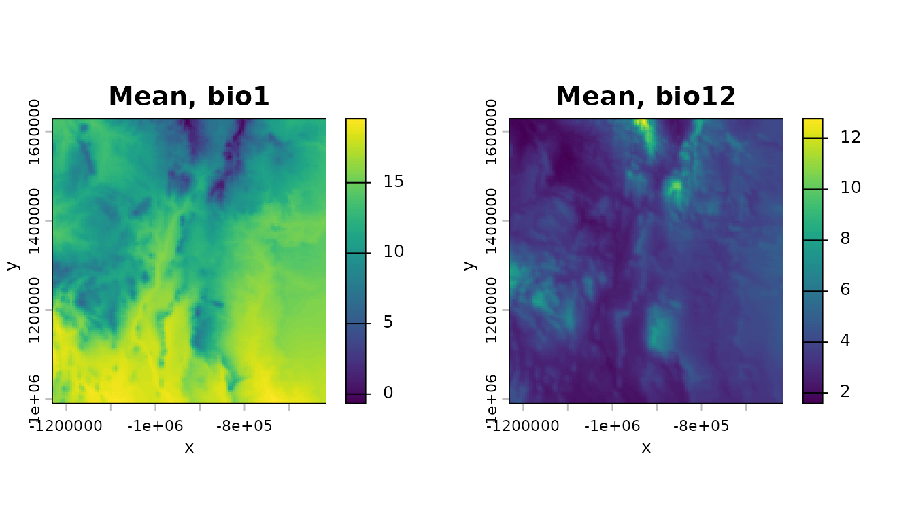
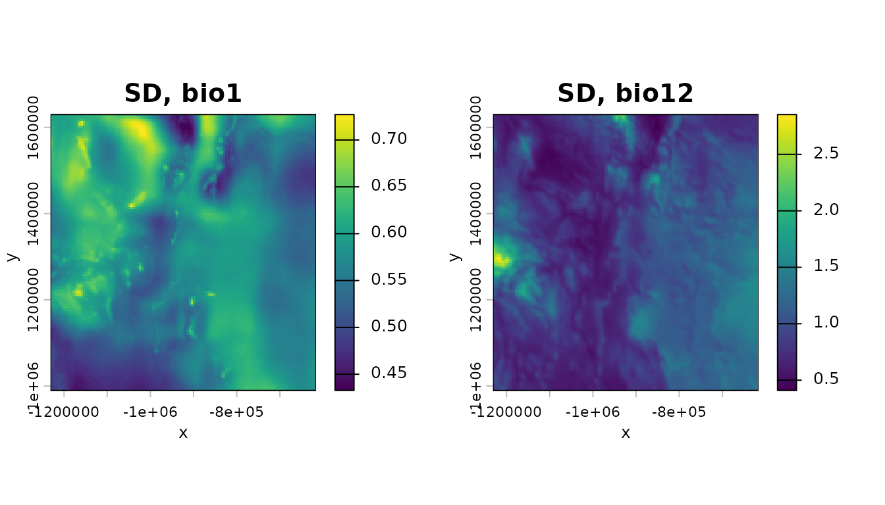
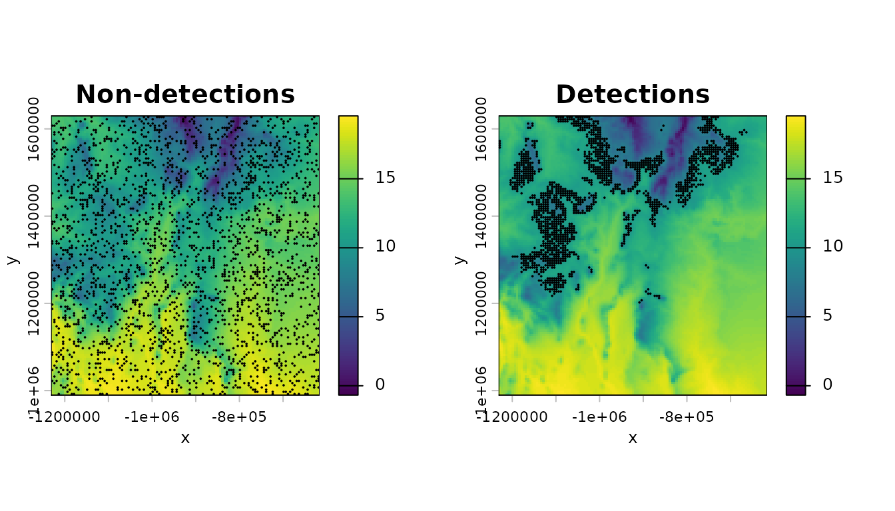
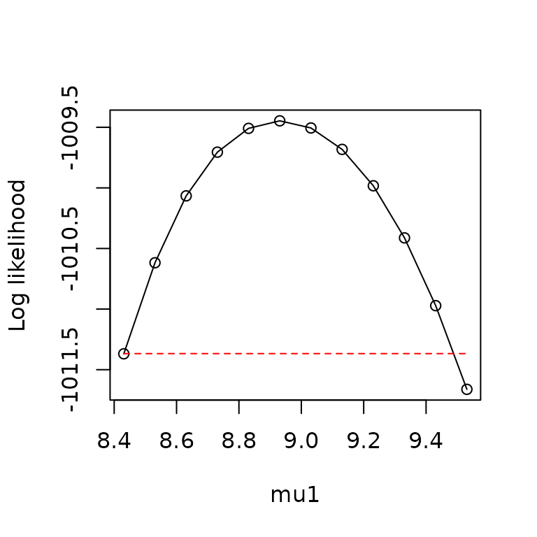
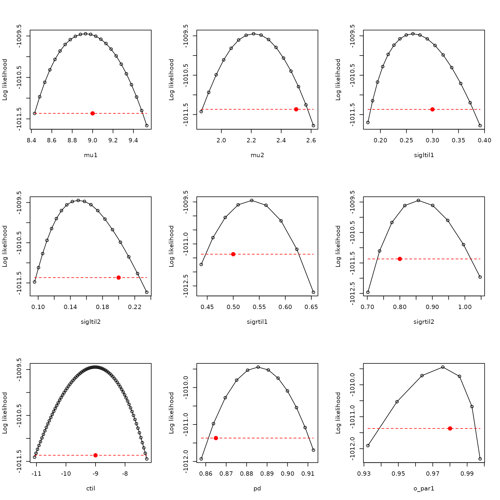
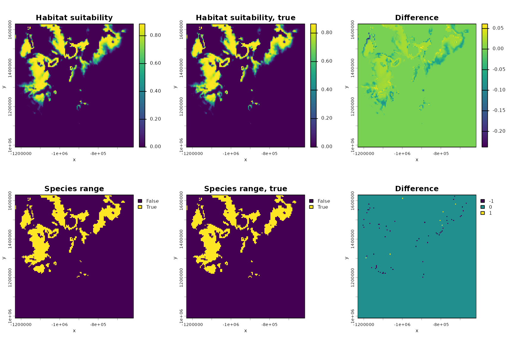
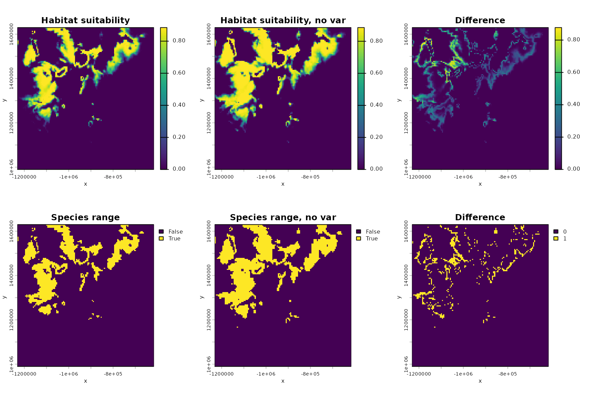
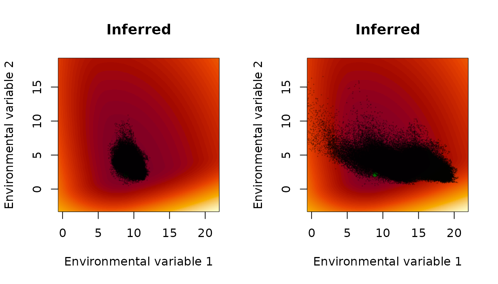
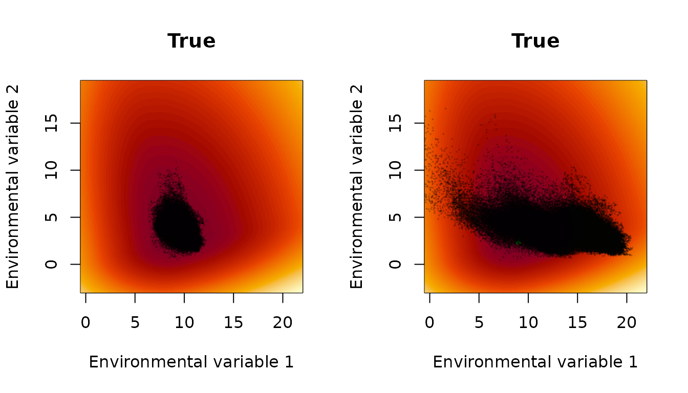

How to fit xsdm models with species occurrence data using xsdm
Daniel C. Reuman
Department of Ecology and Evolutionary Biology and Center for Ecological Research, University of KansasAngel Luís Robles Fernández
Department of Ecology and Evolutionary Biology and Center for Ecological Research, University of KansasSource:
vignettes/how_to_fit.Rmd
how_to_fit.RmdAbstract. After reading the document entitled “The
xsdm model”, this document introduces the statistically and
computationally sophisticated user to the main functions of the
xsdm package. The package implements a frequentist analysis
of the xsdm model. This document should get the user to the point of
maximizing the likelihood of the model and profiling in “easy” cases,
with callouts to several troubleshooting documents about what to do when
the process does not go smoothly. Alternative fitted models can also be
compared by AIC or another criterion. The example worked out here is for
a virtual species (i.e., generated data), so we also demonstrate that
fitting an xsdm model can recover the true parameters if model
mis-specification is not an issue.
Introduction to the running example used throughout this document
This manual uses a small built-in example included with the
xsdm R package to illustrate a baseline workflow. The
example contains (i) an occurrence table for a virtual species, and (ii)
two environmental terra raster time series representing
CHELSA-derived bioclimatic variables for a region of interest over 39
years.
Load the data and get oriented to the first bioclimatic variable, which is mean annual temperature in units of \(100 \times ^\circ\)C for 39 years for a particular region of interest. And make it units of \(^\circ\)C:
## [1] "SpatRaster"
## attr(,"package")
## [1] "terra"
dim(bio_1)## [1] 128 123 39
mm <- terra::global(bio_1,fun=c("min","max"))
min(mm$min) #global min over all years and all locations## [1] -154
max(mm$max) #global max## [1] 2061
bio_1 <- bio_1/100 #Make it degrees CNow load the second environmental variable, which is annual total precipitation, in units of kg/m\(^2\), for the same 39 years and the same region of interest:
## [1] "SpatRaster"
## attr(,"package")
## [1] "terra"
dim(bio_12)## [1] 128 123 39
mm <- terra::global(bio_12,fun=c("min","max"))
min(mm$min) #again the global min, all years and locations## [1] 45
max(mm$max) #global max## [1] 1761If the scales of your environmental variables are vastly different, it can cause problems with optimization (see the document “Troubleshooting: Optimization problems related to scaling”). So we change the units for precipitation to make the range of values similar to those for temperature. Now the units are going to be dg/m\(^2\):
## [1] -1.54
max(mm$max)## [1] 20.61## [1] 0.45
max(mm$max)## [1] 17.61Next load data on detections and non-detections/pseudo-absences for a species:
d <- example_1$occ_df
class(d)## [1] "tbl_df" "tbl" "data.frame"
dim(d)## [1] 4000 4
head(d)## name lon lat presence
## 1 Species virtualis -1108723 1402222 1
## 2 Species virtualis -883723 1402222 0
## 3 Species virtualis -808723 1422222 1
## 4 Species virtualis -1168723 1552222 0
## 5 Species virtualis -1028723 1437222 0
## 6 Species virtualis -948723 1452222 1
sum(d$presence==1)## [1] 1609Now take a basic look at the environmental variables and the species data, just to see what we have. Start by getting the means through time of the environmental time series and plotting:
m_bio_1 <- terra::app(bio_1,mean)
m_bio_12 <- terra::app(bio_12,mean)
par(mfrow=c(1,2))
terra::plot(m_bio_1,axes=TRUE,main="Mean, bio1",xlab="x",ylab="y",legend=TRUE)
terra::plot(m_bio_12,axes=TRUE,main="Mean, bio12",xlab="x",ylab="y",legend=TRUE)
Now do the same for standard deviations:
sd_bio_1 <- terra::app(bio_1,sd)
sd_bio_12 <- terra::app(bio_12,sd)
par(mfrow=c(1,2))
terra::plot(sd_bio_1,axes=TRUE,main="SD, bio1",xlab="x",ylab="y",legend=TRUE)
terra::plot(sd_bio_12,axes=TRUE,main="SD, bio12",xlab="x",ylab="y",legend=TRUE)
Now plot the species detections and non-detections/pseudo-absences on a backdrop of the mean of bio 1:
pts_0 <- terra::vect(as.data.frame(d[d$presence==0,]),geom=c("lon","lat"),crs=terra::crs(m_bio_1))
pts_1 <- terra::vect(as.data.frame(d[d$presence==1,]),geom=c("lon","lat"),crs=terra::crs(m_bio_1))
par(mfrow=c(1,2))
terra::plot(m_bio_1,axes=TRUE,main="Non-detections",xlab="x",ylab="y",legend=TRUE)
terra::plot(pts_0,add=TRUE,col="black",pch=20,cex=.2)
terra::plot(m_bio_1,axes=TRUE,main="Detections",xlab="x",ylab="y",legend=TRUE)
terra::plot(pts_1,add=TRUE,col="black",pch=20,cex=.2)
The fitting tools offered by xsdm use a more succinct
version of the data, since only the environmental time series at the
locations for which there is a detection or a
non-detection/pseudo-absence matter; though we will return to using
rasters after fitting and model selection. So, for now, we cut out only
those time series at the species locations and store them in an array
using the convenience function env\_data\_array:
env_data <- list(bio_1=bio_1, bio_12=bio_12) # order defines variable 1 and 2
env_array <- env_data_array(env_data, d) # (n locations) x (time) x (p vars)
class(env_array)## [1] "array"
dim(env_array)## [1] 4000 39 2And we pull out the presences/pseudo-absences as a binary vector:
occ <- d$presence
length(occ)## [1] 4000Now we are ready to think about how the xsdm model applies to our data.
Evaluating the likelihood
The xsdm model’s likelihood function is described in the document “The xsdm model”, where model parameter are also described in detail. Parameters are:
- \(\vec{\mu}\), which encodes ideal values for population growth of the two environmental variables (a length-2 vector for the present scenario of two environmental variables, unconstrained values);
- \(\tilde{\vec{\sigma}}_L\), which has to do with breadth of the growth-environment function “to the left” with respect to two basis vectors (a length-2 vector for our case, positive entries);
- \(\tilde{\vec{\sigma}}_R\), which is similar but “to the right” (a length-2 vector, positive entries);
- \(\tilde{c}\) and \(p_d\), which relate to species detection (scalars, \(\tilde{c}\) is unconstrained and \(0<p_d\leq 1\)); and
- \(O\), which is an orthogonal matrix which describes the basis vectors mentioned above (\(2 \times 2\) for the present example, must be orthogonal, i.e., \(OO^{\tau}=I\) for \(\tau\) the transpose).
In code, the above parameters are denoted mu,
sigltil, sigrtil, ctil,
pd, and o\_mat.
The likelihood is coded as loglik\_bio, so as an
introduction to the function let’s evaluate it at a haphazardly chosen
set of parameters:
mu <- c(1,1)
sigltil <- c(1,4)
sigrtil <- c(2,3)
ctil <- -10
pd <- 0.8
o_mat <- diag(2)
loglik_bio(env_array,occ,mu,sigltil,sigrtil,o_mat=o_mat,ctil=ctil,pd=pd)## [1] -2110.297By default, the function gives the log likelihood, but you can also get the linear-scale likelihood:
loglik_bio(env_array,occ,mu,sigltil,sigrtil,o_mat=o_mat,ctil=ctil,pd=pd,return_prob=TRUE)## [1] 0For these haphazardly chosen parameters, the (linear-scale) likelihood is zero to within numeric precision - this is typical. We next optimize.
An unconstrained parameter space
Some model parameters are constrained, i.e., only certain values are
allowed (specifically, sigltil, sigrtil,
pd, and o\_mat; see previous section). Rather
than attempt to perform optimizations subject to these constraints, we
here define a transformation from an unconstrained Euclidean space to
the space of allowed parameters, and we subsequently optimize on the
unconstrained space. Parameters in the unconstrained space are
henceforth called “math-scale” parameters, and the constrained
parameters described above are called “biological-scale” parameters
because they more directly represent biological quantities. When a
distinction is needed in mathematical notation, we denote
biological-scale parameters with a superscript \((b)\), and math-scale parameters with a
superscript \((m)\), i.e., \(\vec{\mu}^{(b)}\), \(O^{(b)}\), \(\tilde{\vec{\sigma}}_L^{(b)}\), \(\tilde{\vec{\sigma}}_R^{(b)}\), \(\tilde{c}^{(b)}\), and \(p_d^{(b)}\) versus \(\vec{\mu}^{(m)}\), \(O^{(m)}\), \(\tilde{\vec{\sigma}}_L^{(m)}\), \(\tilde{\vec{\sigma}}_R^{(m)}\), \(\tilde{c}^{(m)}\), and \(p_d^{(m)}\).
The transformation from math- to biological-scale parameters acts separately on each parameter, as follows for all the parameters except \(O\):
\[ \begin{aligned} \vec{\mu}^{(b)} &= \vec{\mu}^{(m)} \\ \tilde{\vec{\sigma}}_L^{(b)} &= \exp(\tilde{\vec{\sigma}}_L^{(m)}) \\ \tilde{\vec{\sigma}}_R^{(b)} &= \exp(\tilde{\vec{\sigma}}_R^{(m)}) \\ \tilde{c}^{(b)} &= \tilde{c}^{(m)} \\ p_d^{(b)} &= \expit(p_d^{(m)}). \end{aligned} \]
Here, \(\exp\) of a vector is interpreted to be the vector resulting from \(\exp\)-transforming each component, and \(\expit\) is the standard logistic sigmoid function \(1/(1+\exp(-x))\), i.e., the inverse of the \(\logit\) function.
The parameter \(O^{(m)}\) is interpreted to be an unconstrained Euclidean vector of dimension \(\frac{p^2-p}{2}\), where \(p\) is the number of environmental variables being considered (\(p=2\) in our running example), and \(O^{(b)}\) is obtained from \(O^{(m)}\) by using \(O^{(m)}\) to form a skew-symmetric matrix of dimensions \(p \times p\), and then applying the matrix exponential map to that skew-symmetric matrix. It is known that the matrix exponential of a skew-symmetric matrix is an orthogonal matrix.
The unconstrained space of parameters (the space of math-scale parameters) is thus a Euclidean space of dimensions \(3p+\frac{p^2-p}{2}+2\). The \(3p\) term in this expression comes from the parameters \(\vec{\mu}^{(m)}\), \(\tilde{\vec{\sigma}}_L^{(m)}\), and \(\tilde{\vec{\sigma}}_R^{(m)}\); the \(2\) in this expression comes from the parameters \(\tilde{c}^{(m)}\) and \(p_d^{(m)}\); and the term \(\frac{p^2-p}{2}\) in the expression comes from \(O^{(m)}\).
The transformation from math-scale to bio-scale parameters is
implemented in xsdm using the function
math\_to\_bio, which takes an unconstrained numeric vector
as its argument and returns a named list of of biological-scale
parameters. But it is not so common for the end-user to call
math\_to\_bio directly because we have written the
likelihood directly in terms of the math-scale parameters in a function
loglik\_math. We now demonstrate math\_to\_bio
and loglik\_math:
#loglik_bio and math_to_bio require a named argument to help prevent errors -
#see below - make_mask_names helps set it up
param_vector <- make_mask_names(p=2) #p = 2 environmental variables in our case
param_vector## mu1 mu2 sigltil1 sigltil2 sigrtil1 sigrtil2 ctil pd
## NA NA NA NA NA NA NA NA
## o_par1
## NA
set.seed(101)
param_vector[1:9] <- rnorm(9) #fill with random values just to try it
math_to_bio(param_vector)## $mu
## [1] -0.3260365 0.5524619
##
## $sigltil
## [1] 0.509185 1.239068
##
## $sigrtil
## [1] 1.364474 3.234797
##
## $ctil
## [1] 0.6187899
##
## $pd
## [1] 0.4718462
##
## $o_mat
## [,1] [,2]
## [1,] 0.6081818 -0.7937978
## [2,] 0.7937978 0.6081818
loglik_math(param_vector,env_dat=env_array,occ=occ,negative=FALSE)## [1] -52393.06The function loglik\_math first transforms parameters to
the biological scale using math\_to\_bio and then evaluates
loglik\_bio; so one optimizes it directly (see below). If
your favorite optimizer minimizes by default, you can use:
loglik_math(param_vector,env_dat=env_array,occ=occ,negative=TRUE)## [1] 52393.06Before moving on to optimizing, we note that
loglik\_math requires a named vector for its input
param\_vector. This is to reduce the possibility of errors
stemming form parameter ordering. There is a naming convention for
arguments which must be followed exactly, and which is described in the
documentation for loglik\_math. The function
make\_mask\_names helps the user by giving the parameter
names which are required for a model making use of a given number of
environmental variables.
Optimizing the likelihood
Maximizing the likelihood from one initial parameter guess is
straightforward using the built-in R function optim (and a
variety of other optimizers are also available):
optim(par=param_vector,fn=loglik_math,method="BFGS",
env_dat=env_array,occ=occ,negative=TRUE,
control=list(trace=100))## initial value 52393.064895
## final value 2695.653693
## converged## $par
## mu1 mu2 sigltil1 sigltil2 sigrtil1 sigrtil2
## 74.2810628 17.7714932 -0.6749438 294.5651129 509.1899967 1.1739658
## ctil pd o_par1
## -19.3033406 -0.3960988 -71.7462579
##
## $value
## [1] 2695.654
##
## $counts
## function gradient
## 37 9
##
## $convergence
## [1] 0
##
## $message
## NULLBut multiple optimizations should typically be done starting from different initial conditions to improve chances of finding the global maximum to the likelihood function.
The function start\_parms can be used to find plausible
initial conditions for optimization:
num_starts <- 10
starts <- start_parms(env_array[occ==1,,],num_starts=num_starts)
starts## # A tibble: 10 × 9
## mu1 mu2 sigltil1 sigltil2 sigrtil1 sigrtil2 ctil pd o_par1
## <dbl> <dbl> <dbl> <dbl> <dbl> <dbl> <dbl> <dbl> <dbl>
## 1 8.68 3.38 -0.277 0.124 -0.0442 -0.216 -1.47 1.92 -5.89
## 2 9.92 4.68 0.417 -0.569 -0.737 0.477 -0.993 -0.275 3.53
## 3 10.5 2.73 0.0700 0.470 -0.391 0.131 -0.753 0.824 -1.18
## 4 9.30 4.03 -0.623 -0.223 0.302 0.824 -1.23 -1.37 8.25
## 5 8.99 3.06 0.590 -0.0494 -0.217 0.650 -1.35 -0.824 -8.25
## 6 10.2 4.36 -0.103 -0.743 0.476 -0.0428 -0.873 1.37 1.18
## 7 9.61 3.71 -0.450 0.297 0.129 0.304 -0.633 -1.92 -3.53
## 8 8.37 5.01 0.243 -0.396 -0.564 -0.389 -1.11 0.275 5.89
## 9 8.45 3.79 0.460 -0.266 -0.434 0.000542 -1.02 1.51 5.30
## 10 9.52 3.68 -0.0166 -0.136 -0.131 0.217 -0.927 0 0We recommend, for real data, at least 50 initial conditions for optimization, or more if using more than two environmental variables or if warranted after running 50 (see below). But for this exercise we use only 10 to keep run times low. We now optimize from all the start parameters:
all_optim_results <- list()
for (counter in 1:(dim(starts)[1]))
{
all_optim_results[[counter]]<- optim(par=starts[counter,],fn=loglik_math,
method="BFGS",env_dat=env_array,occ=occ,negative=TRUE,
control=list(trace=0))
}We now want to judge whether it is sufficiently likely that we succeeded in finding the global maximum. One can never be certain, here, but there are various checks that one can use to help assess this. We consider it more likely that the global maximum was located if multiple initial conditions spread widely across parameter space all converged to the same maximized likelihood and the same parameters. So we next assess this based on the optimization results we achieved.
First, we look at the maximized likelihood values:
bestlogliks <- sapply(X=all_optim_results,FUN=function(x){x$value})
convergence <- sapply(X=all_optim_results,FUN=function(x){x$convergence})
table(convergence)## convergence
## 0 1
## 9 1
inds <- order(bestlogliks)
bestlogliks <- bestlogliks[inds]
bestlogliks## [1] 1009.447 1009.447 1009.447 1009.447 1009.447 1034.676 1107.866 1112.943
## [9] 1161.071 1174.072These results indicate that: 1) most of the 10 optimizations appear
to have converged according to the diagnostics of optim (0
means convergence for optim); and 2) five of the 10
optimizations returned the same, highest log-likelihood to within 3
digits. This, already, is pretty good evidence that multiple
optimizations arrived at the same place in parameter space, i.e., the
same maximum-likelihood parameters - it would be unusual for two
distinct local maxima of the log-likelihood function to have the same
height. But we can also check this directly, which is what we do
next.
The parameters resulting from our optimizations are:
all_optim_results <- all_optim_results[inds]
allpars <- sapply(X=all_optim_results,FUN=function(x){x$par})
allpars## [,1] [,2] [,3] [,4] [,5] [,6]
## mu1 8.9308684 8.9307258 8.9306340 8.9309420 8.9320049 8.2945352
## mu2 2.2155105 2.2156080 2.2153084 2.2153566 2.2151750 3.4362910
## sigltil1 -1.3377407 -1.3377801 -1.8986340 -1.3376978 -0.1539165 -0.4147331
## sigltil2 -1.8983845 -1.8982674 -0.6244625 -1.8984457 -1.3370435 -1.5973825
## sigrtil1 -0.6245251 -0.6244731 -0.1541976 -0.6244635 -1.8986953 14.4328482
## sigrtil2 -0.1541893 -0.1542019 -1.3380042 -0.1541155 -0.6247372 -0.4664596
## ctil -9.0143189 -9.0139479 -9.0152724 -9.0136131 -9.0118765 -7.6008188
## pd 2.0470009 2.0470328 2.0469530 2.0470708 2.0470954 2.0499038
## o_par1 -6.0630898 -6.0631312 1.7908738 0.2201439 -1.3504479 -1.5701632
## [,7] [,8] [,9] [,10]
## mu1 10.1913091 10.9338412 8.4428284 11.0363274
## mu2 2.9649252 1.9506633 -0.8976550 1.0242092
## sigltil1 7.0235236 5.6594633 -1.2515513 -1.5374616
## sigltil2 -1.5170334 -0.5053416 -0.6322023 0.1061578
## sigrtil1 -1.0466329 -2.7633944 7.1289572 25.7327839
## sigrtil2 -0.1323561 -0.9790362 -1.3378986 -8.1260956
## ctil -6.5713459 -3.4807479 -7.3945909 -9.8885679
## pd 1.7686846 2.4585925 1.4668705 1.4501687
## o_par1 6.8581352 -0.9567979 1.5242340 9.7751744These are in the same order as the maximized likelihood values above.
Note that the first five sets of optimized parameters appear the same,
to within a few digits, for the mu1, mu2,
ctil, and pd parameters, but that they appear
to differ from each other with respect to the o\_par1
parameter. And the sigltil1, sigltil2,
sigrtil1, sigrtil2 parameters for one
optimization result appear to be the same, up to a few digits, as for
another optimization results if permuted. These complexities
reflect the fact that the math\_to\_bio mapping is
many-to-one, and that there are also multiple ways to parameterize the
identical xsdm model with distinct biological-scale parameters. These
redundancies affect the sigltil1, sigltil2,
sigrtil1, sigrtil2, and o\_par1
parameters. For models making use of more than two environmental
variables, all the o\_par parameters are affected. In
essence, parameters can be the same, in the sense of giving the same
xsdm model, even if they appear different; so we need to take this
redundancy into account when judging whether different optimizations
resulted in the same parameters.
These issues are described further in the document “Troubleshooting:
Dealing with parameter redundancy,” but the function
dist\_between\_params provides an easy way around these
complexities. The function directly calculates for the user the distance
between two sets of xsdm model parameters while taking into account the
redundancy described; i.e., if dist\_between\_params
indicates a very small difference between two sets of parameters, they
give essentially the same xsdm model and can be considered to be close
to each other in parameter space even if they appear different. So use
the function as the test of parameter similarity, as follows:
dists_to_first <- NA*numeric(num_starts)
for (counter in 1:num_starts)
{
dists_to_first[counter] <-
dist_between_params(
all_optim_results[[1]]$par,
all_optim_results[[counter]]$par
)
}
dists_to_first## [1] 0.000000e+00 9.021237e-04 2.191317e-03 8.640199e-04 4.371897e-03
## [6] 4.551695e+00 4.583577e+00 1.121000e+01 4.916093e+00 3.374898e+03Note that the first five parameter optimization results are all reported to be close in parameter space to the first parameter optimization result.
If, as in this case, sufficiently many of the initial conditions
optimized to give the same, highest maximized likelihood, and these also
gave parameter results which are reported using
dist\_between\_params to be close to each other in
parameter space, we can be sufficiently confident that we have
successfully maximized the likelihood. Profiling, which is covered
below, provides additional checks.
Comparing alternative models
It is straightforward to compare multiple models making use of different combinations of environmental variables, using AIC (or another criterion). We demonstrate how to use xsdm to do that by comparing the previous, two-environmental-variable model with each of the two simpler models that make use of just one of the environmental variables. First, fit the two simpler models:
#Fit the two simpler models
starts_1 <- start_parms(env_array[occ==1,,1,drop=FALSE],num_starts=num_starts)
starts_2 <- start_parms(env_array[occ==1,,2,drop=FALSE],num_starts=num_starts)
all_optim_results_1 <- list()
all_optim_results_2 <- list()
for (counter in 1:num_starts)
{
all_optim_results_1[[counter]]<- optim(par=starts_1[counter,],fn=loglik_math,
method="BFGS",env_dat=env_array[,,1,drop=FALSE],occ=occ,negative=TRUE,
control=list(trace=0))
all_optim_results_2[[counter]]<- optim(par=starts_2[counter,],fn=loglik_math,
method="BFGS",env_dat=env_array[,,2,drop=FALSE],occ=occ,negative=TRUE,
control=list(trace=0))
}Now examine results of the first of the two simpler models:
#Eaxamine results from the first simpler model
convergence_1 <- sapply(X=all_optim_results_1,FUN=function(x){x$convergence})
table(convergence_1)## convergence_1
## 0
## 10
bestlogliks_1 <- sapply(X=all_optim_results_1,FUN=function(x){x$value})
inds <- order(bestlogliks_1)
bestlogliks_1 <- bestlogliks_1[inds]
bestlogliks_1## [1] 1162.205 1162.205 1162.205 1162.205 1162.205 1162.205 1162.205 1162.205
## [9] 1162.205 1162.207
#Look at distance in parameter space
all_optim_results_1 <- all_optim_results_1[inds]
dists_to_first_1 <- NA*numeric(num_starts)
for (counter in 1:num_starts)
{
dists_to_first_1[counter] <-
dist_between_params(all_optim_results_1[[1]]$par,
all_optim_results_1[[counter]]$par)
}
dists_to_first_1## [1] 0.0000000000 0.0002518379 0.0003977229 0.0005398182 0.0009154969
## [6] 0.0003561009 0.0008043828 0.0008854432 0.0042296241 0.0609974894The results suggest that the likelihood function of this model has been adequately maximized.
Now examine results of the second of the two simpler models:
#Examine results from the second simpler model
convergence_2 <- sapply(X=all_optim_results_2,FUN=function(x){x$convergence})
table(convergence_2)## convergence_2
## 0 1
## 9 1
bestlogliks_2 <- sapply(X=all_optim_results_2,FUN=function(x){x$value})
inds <- order(bestlogliks_2)
bestlogliks_2 <- bestlogliks_2[inds]
bestlogliks_2## [1] 2289.336 2289.336 2289.336 2289.337 2289.337 2289.338 2289.345 2289.352
## [9] 2289.458 2624.992
#Look at distances in parameter space
all_optim_results_2 <- all_optim_results_2[inds]
dists_to_first_2 <- NA*numeric(num_starts)
for (counter in 1:num_starts)
{
dists_to_first_2[counter] <-
dist_between_params(all_optim_results_2[[1]]$par,
all_optim_results_2[[counter]]$par)
}
dists_to_first_2## [1] 0.000000e+00 8.706586e-05 1.487843e-05 1.133798e-04 5.216498e-04
## [6] 7.136674e-05 2.960058e-03 5.284775e-03 6.007975e-03 3.150746e+01The results suggest that the likelihood function of this model has been adequately maximized.
Now compute the AIC of each model, bearing in mind that optimization results are already negative log-likelihoods:
#AIC of the 2-environmental variable model, AIC = 2*(number of parameters)-
#2*(maximized log likelihood)
AIC <- 2*length(make_mask_names(2))+2*bestlogliks[1]
AIC## [1] 2036.893
#AICs of the two simpler models
AIC_1 <- 2*length(make_mask_names(1))+2*bestlogliks_1[1]
AIC_1## [1] 2334.41
AIC_2 <- 2*length(make_mask_names(1))+2*bestlogliks_2[1]
AIC_2## [1] 4588.671The best model (lowest AIC) is the two-environmental-variable model, by a considerable margin. This confirms expectation, since the data come from a virtual species, and we know they were generated using both of the two environmental variables (see “Virtual species and habitat suitability maps” for how the data were generated).
Profiling
Profiles are the means by which confidence intervals are constructed, as well as providing other information about the likelihood surface and hence about the nature of the correspondence between the model and the data. Having obtained maximum-likelihood parameters \(\hat{\theta}\) for a log-likelihood function \(\mathcal{L}(\theta)\), a profile on the \(i\)th parameter is obtained by maximizing \(\mathcal{L}(\theta)\), subject to the constraint \(\theta_i = x\), for each value of \(x\) spanning a range surrounding \(\hat{\theta}_i\), and then plotting the resulting maxima against \(x\). Standard use of the likelihood function to formulate confidence intervals and compare models requires that the likelihood function is “well-behaved” near its maximum, which can typically be judged by whether the profiles are “dome shaped”, i.e., they look approximately like a downward-opening parabola. In that case, confidence intervals can be constructed by use of the likelihood ratio test - see basic texts on maximum likelihood methods for additional details.
To calculate profiles using xsdm, use the function
profile\_likelihood, here for :
prof1 <- profile_likelihood(
profile_parameter="mu1",
increment_left=0.1,
increment_right=0.1,
num_steps_left=30,
num_steps_right=30,
alpha=0.95,
optim_param_vector=all_optim_results[[1]]$par,
env_dat=env_array,
occ=occ,
num_threads=4
)
names(prof1)## [1] "profile" "found_better" "threshold" "parameters"
head(prof1$profile)## param value_math loglik convergence
## 6 mu1 8.430868 -1011.369 4
## 5 mu1 8.530868 -1010.618 4
## 4 mu1 8.630868 -1010.066 4
## 3 mu1 8.730868 -1009.705 4
## 2 mu1 8.830868 -1009.509 1
## 1 mu1 8.930868 -1009.447 NANote that the convergence column is returning the convergence flagged
returned by the optimizer ucminfcpp::ucminf_xptr; the value
1 is among the values which indicate convergence to within the
tolerances used.
Two of the outputs of this function contain the profile itself, and the threshold. The region for which the profile is above the threshold is the confidence intervals:
plot(prof1$profile$value_math,prof1$profile$loglik,type="o",
xlab="mu1",ylab="Log likelihood")
lines(range(prof1$profile$value_math),rep(prof1$threshold,2),type="l",
lty="dashed",col="red")
Note that the profiler stops its leftward (respectively, rightward)
progress when num\_steps\_left (resp.,
num\_steps\_right) is exceeded, or when the threshold is
crossed, whichever happens first. Profiling is often a trial-and-error
process of selecting values for increment\_left,
increment\_right, num\_steps\_left, and
num\_steps\_right to get complete and smooth profiles
within the limits of available computational resources. See
“Troubleshooting: Profiles” for additional details.
Often one wants to plot the values of the other parameters which
optimized the likelihood for each value of the profiled parameter. This
can be done using the parameters output of
profile\_likelihood:
head(prof1$parameters)## mu1 mu2 sigltil1 sigltil2 sigrtil1 sigrtil2 ctil
## 1 8.430868 2.385365 -1.672136 -1.761930 -0.5080694 -0.2362573 -9.616335
## 2 8.530868 2.338274 -1.602737 -1.796108 -0.5310032 -0.2196097 -9.517670
## 3 8.630868 2.295531 -1.535397 -1.829401 -0.5538254 -0.2024121 -9.408629
## 4 8.730868 2.266375 -1.467272 -1.851749 -0.5773758 -0.1872151 -9.283128
## 5 8.830868 2.240150 -1.401260 -1.874225 -0.6009627 -0.1712216 -9.150581
## 6 8.930868 2.215511 -1.337741 -1.898384 -0.6245251 -0.1541893 -9.014319
## pd o_par1
## 1 2.032595 -6.170572
## 2 2.035252 -6.148227
## 3 2.038070 -6.126338
## 4 2.040940 -6.105323
## 5 2.043959 -6.084290
## 6 2.047001 -6.063090
pairs(prof1$parameters)As a reminder, these are math-scale parameters.
Finally, the found\_better output of
profile\_likelihood is a flag which tells you whether, in
the course of profiling, a higher likelihood was found than what was
previously believed to be the maximum likelihood:
prof1$found_better## [1] FALSEIn this case, a better value was not found, which provides additional
evidence that we had previously already succeeded in adequately
maximizing the likelihood. If found\_better is
TRUE, it means you have to go back and re-optimize, either
with more initial conditions, or with tighter tolerances on the
optimizer used, or with a different optimizer. Although sometimes it can
be sufficient to simply re-start profiling using the parameters which
were found to yield a new highest likelihood.
We next produce and plot all the profiles for our AIC-best model, where now the profiles are going to be plotted on the biological scale. Since the data are for a virtual species, they were generated with known true parameters. We also plot the true parameter values together with the profiles, to verify that the fitting process has accurately recovered the true parameters. This exercise is complicated by the redundancy, discussed above, of parameters. See below for details of how to resolve that redundancy. First make the profiles:
pnames <- names(make_mask_names(2))
all_profiles <- list()
for (counter in 1:length(pnames))
{
all_profiles[[counter]] <- profile_likelihood(
profile_parameter=pnames[counter],
increment_left=0.05,
increment_right=0.05,
num_steps_left=50,
num_steps_right=50,
alpha=0.95,
optim_param_vector=all_optim_results[[1]]$par,
env_dat=env_array,
occ=occ,
num_threads=6
)
}
names(all_profiles) <- pnamesNow, to deal with the parameter redundancy, convert the maximum-likelihood parameters to the biological scale and find the representation of the true parameters which is closest in parameter space to the maximum-likelihood parameters:
example_1_true_parameters_bio <- list(
mu=c(9,2.5),
sigltil=c(0.3,0.2),
sigrtil=c(0.5,0.8),
ctil=-9,
pd=0.8649783,
o_mat=matrix(c(0.9800666,0.1986693,-0.1986693,0.9800666),2,2)
) #DAN: Note, this needs to be embedded in the package
ML_parameters_bio <- math_to_bio(all_optim_results[[1]]$par)
example_1_true_parameters_bio<-
dist_between_params(example_1_true_parameters_bio,
ML_parameters_bio,
give_closest_rep=TRUE)$representative
example_1_true_parameters_bio## $mu
## [1] 9.0 2.5
##
## $sigltil
## [1] 0.3 0.2
##
## $sigrtil
## [1] 0.5 0.8
##
## $ctil
## [1] -9
##
## $pd
## [1] 0.8649783
##
## $o_mat
## [,1] [,2]
## [1,] 0.9800666 -0.1986693
## [2,] 0.1986693 0.9800666Now plot profiles. Recall we are plotting on the biological scale, so each parameter is transformed before the profile is plotted:
par(mfrow=c(3,3))
plot_tool <- function(x,y,thresh,xlab,true_param)
{
plot(x,y,type="o",xlab=xlab,ylab="Log likelihood")
lines(range(x),rep(thresh,2),type="l",
lty="dashed",col="red")
points(true_param,thresh,
col="red",pch=20,cex=2)
}
#mu1
plot_tool(x = all_profiles$mu1$profile$value_math,
y = all_profiles$mu1$profile$loglik,
thresh = all_profiles$mu1$threshold,
xlab = "mu1",
true_param = example_1_true_parameters_bio$mu[1])
#mu2
plot_tool(x = all_profiles$mu2$profile$value_math,
y = all_profiles$mu2$profile$loglik,
thresh = all_profiles$mu2$threshold,
xlab = "mu2",
true_param = example_1_true_parameters_bio$mu[2])
#sigltil1 - need to exp transform to get to the bio scale
plot_tool(x = exp(all_profiles$sigltil1$profile$value_math),
y = all_profiles$sigltil1$profile$loglik,
thresh = all_profiles$sigltil1$threshold,
xlab = "sigltil1",
true_param = example_1_true_parameters_bio$sigltil[1])
#sigltil2 - need to exp transform to get to the bio scale
plot_tool(x = exp(all_profiles$sigltil2$profile$value_math),
y = all_profiles$sigltil2$profile$loglik,
thresh = all_profiles$sigltil2$threshold,
xlab = "sigltil2",
true_param = example_1_true_parameters_bio$sigltil[2])
#sigrtil1 - need to exp transform to get to the bio scale
plot_tool(x = exp(all_profiles$sigrtil1$profile$value_math),
y = all_profiles$sigrtil1$profile$loglik,
thresh = all_profiles$sigrtil1$threshold,
xlab = "sigrtil1",
true_param = example_1_true_parameters_bio$sigrtil[1])
#sigrtil2 - need to exp transform to get to the bio scale
plot_tool(x = exp(all_profiles$sigrtil2$profile$value_math),
y = all_profiles$sigrtil2$profile$loglik,
thresh = all_profiles$sigrtil2$threshold,
xlab = "sigrtil2",
true_param = example_1_true_parameters_bio$sigrtil[2])
#ctil
plot_tool(x = all_profiles$ctil$profile$value_math,
y = all_profiles$ctil$profile$loglik,
thresh = all_profiles$ctil$threshold,
xlab = "ctil",
true_param = example_1_true_parameters_bio$ctil)
#pd - need to expit transform to get to the bio scale
plot_tool(x = expit(all_profiles$pd$profile$value_math),
y = all_profiles$pd$profile$loglik,
thresh = all_profiles$pd$threshold,
xlab = "pd",
true_param = example_1_true_parameters_bio$pd)
#o_mat - Note that this is a single parameter on the math scale, so we only
#need to profile one of the matrix entries on the biological scale
x <- sapply(X=all_profiles$o_par1$profile$value_math,
FUN=function(x){build_orthogonal_matrix(x)[1,1]})
plot_tool(x = x,
y = all_profiles$o_par1$profile$loglik,
thresh = all_profiles$o_par1$threshold,
xlab = "o_par1",
true_param = example_1_true_parameters_bio$o_mat[1,1])
Note that transforming o\_par profiles to the biological
scale will not work the same way for more than two environmental
variables because, in that case, there are multiple o\_par
parameters, and they interact with each other in the transformation to
the biological scale. In that case, a Bayesian approach may have
advantages.
Habitat suitability maps
We have now fitted several models, selected a best one, verified that
the profiles look good, and shown that fitting captures the true model
parameters. Habitat suitability maps are done with the
habitat\_suitability function.
#plot the habitat suitability map
par(mfrow=c(2,3))
hab_suit <- habitat_suitability(param_list=ML_parameters_bio, env_list=env_data)
terra::plot(hab_suit,main="Habitat suitability",xlab="x",ylab="y",legend=TRUE)
#plot the true habitat suitability map
hab_suit_true <- habitat_suitability(param_list=example_1_true_parameters_bio, env_list=env_data)
terra::plot(hab_suit_true,main="Habitat suitability, true",
xlab="x",ylab="y",legend=TRUE)
#plot the difference
terra::plot(hab_suit-hab_suit_true,main="Difference",
xlab="x",ylab="y",legend=TRUE)
#plot the species ranges assuming a threshold of 0.5
terra::plot((hab_suit>.5),main="Species range",
xlab="x",ylab="y",legend=TRUE)
terra::plot((hab_suit_true>.5),main="Species range, true",
xlab="x",ylab="y",legend=TRUE)
#plot the difference
terra::plot((hab_suit>.5)-(hab_suit_true>.5),
main="Difference",
xlab="x",ylab="y",legend=TRUE)
#compute percent error in range
area <- sum(as.data.frame((hab_suit_true>.5)))
area_setdiff <- sum(abs(as.data.frame((hab_suit>.5)-(hab_suit_true>.5))-0)>1e-1)
delta <- (area_setdiff)/area
area## [1] 2058
area_setdiff## [1] 69
delta## [1] 0.0335277As you can see, both the inferred habitat suitability map and the associated species range are similar to the true versions.
One of the main things xsdm is good for is assessing the
influence of inter-annual climatic variability on species distributions,
so we also display what the habitat suitability map would look like if
the value of each environmental variable in each location were always
equal to the temporal mean for that variable and location. We use
inferred parameters.
#plot the habitat suitability map again, to ease comparisons
par(mfrow=c(2,3))
hab_suit <- habitat_suitability(param_list=ML_parameters_bio, env_list=env_data)
terra::plot(hab_suit,main="Habitat suitability",xlab="x",ylab="y",legend=TRUE)
#plot the habitat suitability map without variability
m_bio_1_ts <- rep(m_bio_1,terra::nlyr(bio_1))
m_bio_12_ts <- rep(m_bio_12,terra::nlyr(bio_12))
m_env_data <- list(m_bio_1=m_bio_1_ts,m_bio_12=m_bio_12_ts)
m_hab_suit <- habitat_suitability(param_list=ML_parameters_bio, env_list=m_env_data)
terra::plot(m_hab_suit,main="Habitat suitability, no var",
xlab="x",ylab="y",legend=TRUE)
#plot the difference
terra::plot(m_hab_suit-hab_suit,main="Difference",
xlab="x",ylab="y",legend=TRUE)
#plot the species ranges assuming a threshold of 0.5
terra::plot((hab_suit>.5),main="Species range",
xlab="x",ylab="y",legend=TRUE)
terra::plot((m_hab_suit>.5),main="Species range, no var",
xlab="x",ylab="y",legend=TRUE)
#plot the difference
terra::plot((m_hab_suit>.5)-(hab_suit>.5),
main="Difference",
xlab="x",ylab="y",legend=TRUE)
#compute change in area due to variability
area <- sum(as.data.frame((hab_suit>.5)))
area_novar <- sum(as.data.frame((m_hab_suit>.5)))
delta_area <- (area_novar-area)/area_novar
area## [1] 2003
area_novar## [1] 2716
delta_area## [1] 0.2625184So we see variability reduces area by a certain percentage for this virtual species.
Interpreting model parameters
We would like to interpret the the parameters of the fitted model to
say what we can about how the species responds to the environment. This
is rendered a bit more challenging due to the parameter reduction step
which was carried out for the model to eliminate structural
non-identifiability (see “The xsdm model” for details). The function
interpret\_parameters helps with this, displaying plots
which describe the inferred growth-environment function (the
relationship between the environment, \(\vec{e}_t\), in a given year in a location
and the annual net growth rate, \(\lambda_t\)). For instance, for our
example, the contours of that function are determined, though their
heights are not determined. The contours are enough to tell the user
what the optimal environment is for the species, and how sensitive
annual net growth is to departures from this optimum for each
environmental variable, relative to the other environmental
variables:
par(mfrow=c(1,2))
interpret_parameters(param_list=ML_parameters_bio,
plot_indices=c(1,2),
plot_lims=list(c(-9.5,13),c(-5.5,17)))
title(main="Inferred")
points(env_array[occ==1,,1],env_array[occ==1,,2],pch=20,
col=rgb(0,0,0,.2),cex=0.2)
interpret_parameters(param_list=ML_parameters_bio,
plot_indices=c(1,2),
plot_lims=list(c(-9.5,13),c(-5.5,17)))
title(main="Inferred")
points(env_array[occ==0,,1],env_array[occ==0,,2],pch=20,
col=rgb(0,0,0,.2),cex=0.2)
The points displayed here are all values of the environmental variables, in any year, in locations for which the species was detected (left) or assumed absent (right). One can see that growth is inferred to be more sensitive to low temperatures (leftward departures of environmental variable 1 from the optimum) than it is to high temperatures (rightward departures); and growth is more sensitive to drought (downward departures of environmental variable 2 from the optimum) than it is to abundant rainfall (upward departures). One can see that, as expected, the environment is more suitable for population growth, according to the inferred growth-environment function, in locations for where the species was observed. One can see that, even in locations found to be unsuitable for the species (right panel), there were plenty of individual years for which environmental conditions promoted growth in that year, demonstrating the importance of interannual variability.
Now we plot the same thing for the true parameters:
par(mfrow=c(1,2))
interpret_parameters(param_list=example_1_true_parameters_bio,
plot_indices=c(1,2),
plot_lims=list(c(-9.5,13),c(-5.5,17)))
title(main="True")
points(env_array[occ==1,,1],env_array[occ==1,,2],pch=20,
col=rgb(0,0,0,.2),cex=0.2)
interpret_parameters(param_list=example_1_true_parameters_bio,
plot_indices=c(1,2),
plot_lims=list(c(-9.5,13),c(-5.5,17)))
title(main="True")
points(env_array[occ==0,,1],env_array[occ==0,,2],pch=20,
col=rgb(0,0,0,.2),cex=0.2)
Results were quite similar. Plots against one environmental variable
are also possible, holding the other one at optimal values. See the
documentation of interpret\_parameters for details.